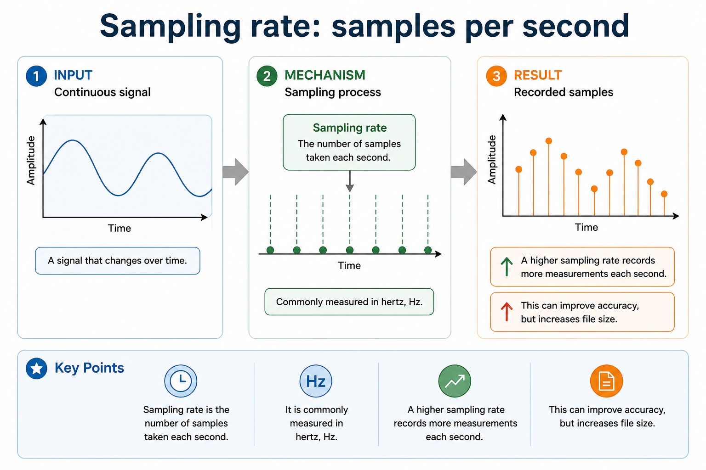

Sampling measures a wave at discrete moments
Sound in air is an analogue wave whose amplitude changes continuously. A computer creates a digital representation by measuring amplitude at regular time intervals, quantising each measurement to an available level and storing the selected level as a binary sample value.
Sampling rate is the number of samples taken each second, measured in hertz. A higher rate records the wave at more points in time, which can improve time accuracy but stores more sample values and therefore increases file size.
Sampling resolution is the number of bits used per sample. More bits provide more amplitude levels, which can reduce quantisation error and improve amplitude accuracy, but every sample needs more storage.
Rate and resolution improve different axes: rate changes how often the wave is measured; resolution changes how precisely each measured amplitude can be represented.
Mechanism in examinable order
- Sample at regular time intervalsThe analogue-to-digital converter measures the current amplitude according to the sampling rate.
- Choose an available amplitude levelThe measured value is rounded to one of the levels permitted by the sampling resolution.
- Store the level as a binary valueThe ordered binary samples form the digital representation that can be stored and processed.
Worked example · Separate the two quality controls
- Time axis
Doubling the sampling rate doubles the number of measurements per second; duration is unchanged but twice as many sample values are stored.
- Amplitude axis
Increasing resolution from 8 to 16 bits changes the number of available levels from 256 to 65,536 and doubles the bits stored for each sample.
- Conclusion
Both changes can improve accuracy and increase file size, but they do so through different mechanisms.
Sampling rate: samples per second

- Definition
- Sampling rate is the number of samples taken each second.
- It is commonly measured in hertz, Hz.
- A higher sampling rate records more measurements each second.
- This can improve accuracy, but increases file size.
教师讲法 / 易错点
用“术语 → 机制/步骤 → 场景后果”检查 S1.10。先让学生读素材关系，再用英文完整表达；若只能复述名词，就回到 worked example 逐步追踪。